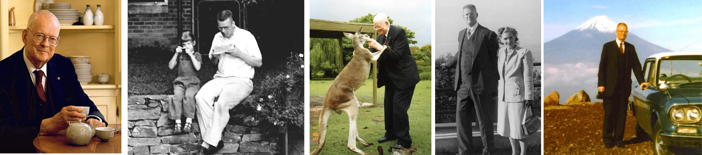

1900
البداية
وُلد في 14 أكتوبر بمدينة سيوكس سيتي، آيوا.
عالم إحصاء ومعلّم ومستشار أمريكي، ربط بين فهم البيانات وتحسين الإدارة واحترام الإنسان. ساعدت أفكاره المؤسسات على رؤية الجودة باعتبارها مسؤولية النظام بأكمله.
اكتشف مسيرته ↓
امتدت مسيرته من الفيزياء والإحصاء إلى تطوير فلسفة للإدارة تقوم على التعلم والتعاون والتحسين المستمر.
اشتهر بعمله مع قادة الصناعة اليابانية بعد الحرب العالمية الثانية، وبإسهامه في نشر أساليب تحسين الجودة. كان يرى أن فهم العمل كنظام مترابط يغيّر طريقة اتخاذ القرارات ومساعدة الناس على النجاح.
السيرة · معهد ديمنج ↗وُلد في 14 أكتوبر بمدينة سيوكس سيتي، آيوا.
بكالوريوس الهندسة من وايومنغ، ثم ماجستير من كولورادو عام 1925، ودكتوراه الفيزياء الرياضية من ييل عام 1928.
عمل بوزارة الزراعة، وتأثر بوالتر شوهارت. ثم عمل بمكتب التعداد الأمريكي على أساليب المعاينة الإحصائية.
انتقل إلى الاستشارات الخاصة والتدريس في جامعة نيويورك.
درّس تحسين الجودة للمهندسين والقادة في اليابان عام 1950؛ وأُنشئت جائزة ديمنج عام 1951.
قدّم الوثائقي «If Japan Can, Why Can’t We?» أفكاره إلى جمهور أمريكي أوسع.
حصل على الميدالية الوطنية للتكنولوجيا في الولايات المتحدة.
تأسس معهد ديمنج. توفي في 20 ديسمبر، وبقيت أفكاره مرجعاً في الإدارة والجودة.
جمع بين البحث والتدريس والاستشارات والكتابة. من كتبه البارزة:
يعرض فلسفته في الإدارة، ومنها المبادئ الأربعة عشر للتحول وتحسين العمل.
يشرح منظومة المعرفة العميقة: النظام، والتباين، ونظرية المعرفة، وعلم النفس.